제 1 장 서론
제 2 장 한국형 스마트공장 도입 현황
2.1 한국형 스마트공장 정책 발전 과정 ································· 3
2.2 스마트공장 구축 전략: 시스템 도입 관점 점진적 혁신 ··········· 4
2.3 스마트공장 수준별 보급 현황 ······································· 5
2.4 ICT 기술 도입에 대한, 중소기업의 인식 ··························· 6
2.5 스마트공장을 도입한 기업들의 애로사항 ··························· 6
2.6 한국형 스마트공장 도입 - 시사점 ·································· 7
제 3 장 포스코 스마트공장 구축 과정
3.1 포스코 소개 ··························································· 8
3.2 포스코의 업무혁신 기반 시스템 도입 Timeline ··················· 9
3.3 PI 1기 (1999-2001) ················································· 10 3.4 PI 2기 (2002-2005) ················································· 11 3.5 PI 3기 (2006-2008) ················································· 13
3.6 PI 4기 (2009-) & POSTIM (2014-) ······························ 14
3.7 스마트공장 플랫폼 – 포스프레임 ·································· 16
3.8 차세대 스마트공장 플랫폼: IXOTIVE ······························ 17
3.9 포스코의 세계적 경쟁력 ············································· 18
제 4 장 포스코 혁신 사례의 이론적 분석
4.1 포스코의 업무혁신과 동반된 시스템 도입 과정 이론적 분석 ··· 19
4.2 반복적 테스트와 검증을 통한 업무혁신과 시스템 도입 ········· 19
4.3 단계적 아키텍처 혁신을 통한 안정적 스마트공장 구축 ········· 20
4.4 포스코의 상생형 혁신 전략을 통한 성장 전략 ··················· 22
제 5 장 한국형 스마트공장과 포스코 사례 비교
5.1 시스템 도입 과정 비교 ·············································· 23
5.2 스마트공장 구축 아키텍처 비교 ···································· 24
5.3 시스템 도입 기술의 필터링 수단 비교 ···························· 25
제 6 장 결론 및 시사점
제 7 장 한국형 스마트공장 혁신 전략 방향 제언
참고문헌 ········································································ 28
제 I 장. 서론유엔산업개발기구(UNIDO)가 발표한 세계 제조업 경쟁력지수(CIP Index)에 따르면, 우리나라는 전세계 152 개국 중 세계 3 위의 제조업 경쟁력을 보유 중이다. 한국은 제조업을 근간으로 하는 수출중심 국가이지만, 세계시장 점유율 1 위 품목수가 정체되어 있어 제조업 혁신을 통한 제조업 경쟁력 확보가 필요한 상황이다. 제조업에 숙련된 기술자들의 공급은 정체되거나 해외 생산으로 공동화가 심화된상황이고, 제조 기업들은 값싼 노동력을 찾아 개발도상국으로 이전하면서 제조업전반의 노동가치는 하락하고 제조업의 공동화는 급격히 진행 중이다.
이를 타개하기 위해, 주요 제조 강국들은 자국의 산업 제약 요인에 적절한 스마트제조전략을 적극 추진하고 있다. 독일은 정부 주도하에, 산학연 연계를 통해 공적표준화 전략을 추진중이고, 반면 미국은 대기업 주도 하에 개방적 구조로 시장기반의 표준 전략을 추진 중이다. 일본은 느슨화 표준 전략을 통해, JIT(Just inTime), 카이젠, 모노즈쿠리 등 기존의 생산성 향상 방식을 보완하는 방식이고, 중국은 정부차원에서 중점 산업 중심으로, 주요 제조사와 IT 기업 중심으로스마트 제조를 활발하게 추진 중이다.
한국은 정부 주도로, 중소기업 중심 스마트 제조 혁신 전략 정책을 추진 중이다. ICT 미적용 외, 4 단계(기초, 중간 1, 중간 2, 고도)로 나누어 중소기업이스마트공장을 구축하도록 보조하고 있지만, 산업연구원의 수요부문 실태조사분석결과에 따르면, 스마트제조시스템 도입 기업의 생산성은 향상되었지만, 상대적으로 일터혁신과 협력 및 연계의 효과는 적으며, 제품혁신의 효과는미미하다 분석하였다.
세계경제포럼(World Economic Forum)에서는 2018 년부터 전세계 공장 대상, 제조업 미래를 이끌어갈 ‘등대공장’을 선정한다. 국내에서는 유일하게 포스코가선정되어, 스마트공장 구축의 우수사례로 볼 수 있다.
본 연구는 한국형 스마트공장의 혁신 전략 방향과, 우수사례인 포스코의 혁신방향을 비교하여 시사점을 도출하였다.
제 II 장. 한국형 스마트공장 도입 현황
2.1. 한국형 스마트공장 정책 발전 과정
2014 년 6 월 26 일 산업통상자원부는 개최된 ‘전국상공회의소 회장단 오찬간담회’에서 ‘창조경제 구현을 위한 제조업 혁신 3.0’ 전략을 발표하였다. 기본 방향은 IT, SW 융복합을 통해, 생산공정과 제품이 전통 제조업과 차별화된첨단 제조업으로 혁신하고자, 2020 년까지 중소 제조기업 1 만개 공장 스마트화추진과, 이를 추진할 스마트공장 추진단을 신설하였다.
(*스마트제조혁신추진단으로 개명)
이후로, 2018 에는 이를 더 확대시켜 목표를 3 만개로 수정하고, 스마트 산업단지육성하여 전문인력 10 만명을 추가하여, 6.6 만개 일자리의 창출과 18 조원의매출증가를 이루어 낸다는 목표를 두었다.
2020 년에는 KAMP(Korea AI Manufacturing Platform)라는 민관협력 제조특화플랫폼을 구축하여, 데이터와 AI 중심으로 기존 스마트 공장의 고도화를 지원하고있다.
표 1. 한국 정부 스마트 공장 정책 방향 (출처: 중소벤처기업부 보도자료 재구성)
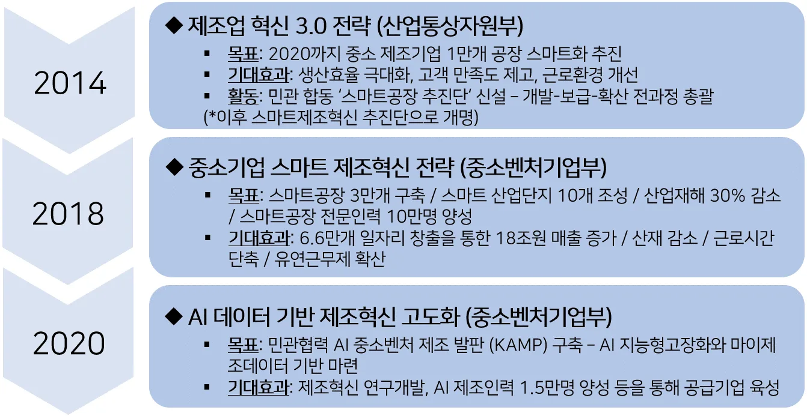
그림 1. KAMP 의 구성도 (출처: KAMP, 2020)
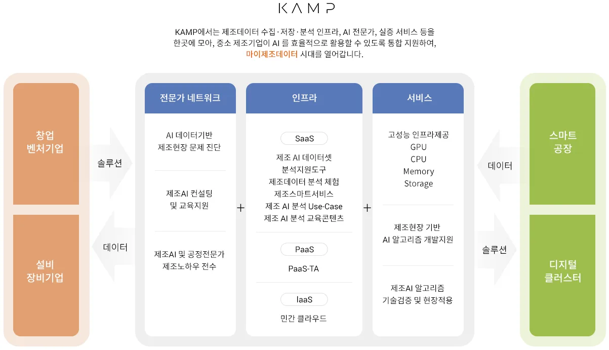
2.2. 스마트공장 구축전략: 시스템 도입 관점 점진적 혁신
중소벤처기업부 산하기관인 스마트제조혁신추진단은 ICT 미적용 단계와스마트공장 도입 단계를 기초, 중간 1, 중간 2, 고도화로 구분 지어, FA, MES, ERP, PLM, SCM 총 5 개의 솔루션 공급 중심으로, 공장 자동화, 사무 자동화, 디지털화, 스마트화, 클라우드를 도입하는 중소기업 맞춤 전략을 가지고 있다.
표 2. 스마트화 수준 정의표 (출처: 스마트제조혁신추진단, 2020)
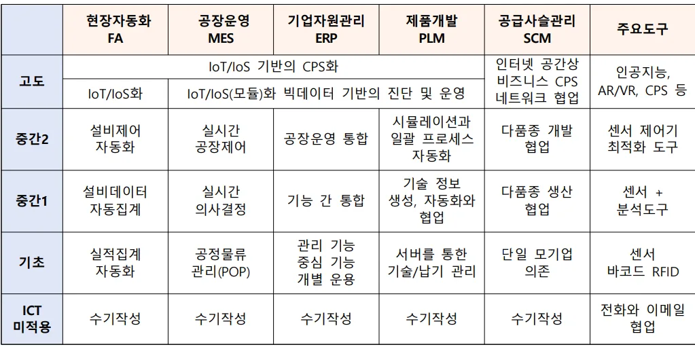
표 3. 수준단계별 구축 Case 참고 정의표 (출처: 스마트제조혁신추진단, 2020)
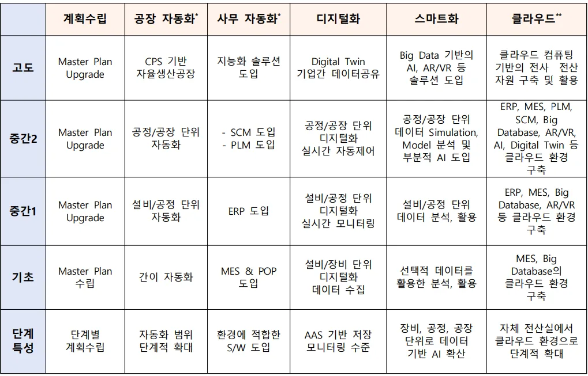
2.3. 스마트공장 수준별 보급 현황
현재 스마트제조혁신추진단을 통해 스마트공장을 도입한 중소기업들의보급현황을 살펴보면, 2019 년 기준 11,488 개의 기업중 8,941 개의 기업인 77.8%의 기업이 기초단계에 머물러 있어, 생산 관리 시스템(MES, Manufacturing Execution System), 전사적 자원 관리 시스템(ERP, Enterprise Resource Planning) 도입 등 정보화 사업 중심의 데이터 중심 스마트화는 매우 미흡한 수준이다. 이를 해결하기 위한 방안으로, 2017 에 “중간 2” 수준 이상의 스마트공장을선정하여, 스마트 제조 기술의 벤치마킹을 위해 견학 프로그램을 하고 있지만, 그럼에도 불구하고, 중간단계로 넘어가는 기업의 수는 매우 적은 수준이다.
표 4. 스마트공장 수준별 보급현황 & 솔루션 보급률 (출처: 융합과학연구소, 2020)
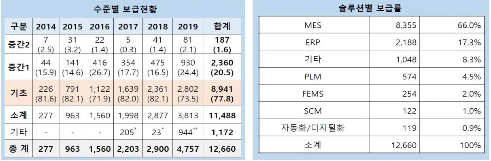
2.4. ICT 기술 도입에 대한, 중소기업의 인식
2020 년 5 월 중소벤처기업부는 2019 중소기업 정보화 수준조사 결과보고서를발표하였다. 해당 자료를 살펴보면, 현재 중소기업 CEO 및 임원들의 81.2%는정보화에 대한 인식은 매우 높은 수준이기는 하나, 정보화를 위한 업무혁신을취하는 중소기업은 12.5%에 불과하였다.
또한, 중소기업들은 정보시스템 도입이 업무 효율성 향상에 대한 기여도는 약 30%에 불과하다 평가하였고, BSC(Balance Score Card) 관점 성과 향상에 대한기여도 또한, 약 30% 수준으로 매우 낮게 평가되었다.
그림 2. 정보화 마인드 – CEO/임원 그림 3. 정보화를 위한 업무혁신 수준
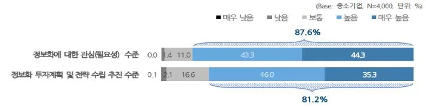
그림 4. 정보시스템 업무 효율성 향상 그림 5. 정보시스템 BSC 관점 성과
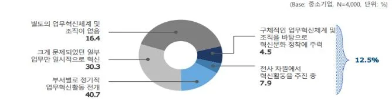
기여수준 기여수준 *BSC: Business Score Card
(출처: 중소벤처기업부, 2020)
2.5. 스마트공장을 도입한 기업들의 애로사항
스마트공장을 도입한 기업들을 상대로만 조사한 결과를 보면, 스마트 공장의 파급영향 및 기대효과는 50% 이상 수준으로 매우 긍정적인 기대감을 가지고는 있다. 하지만, ICT 기술 도입에 현실적으로 초기 투자 자금을 마련하는 부담도 크고, 투자 대비 효과의 불확실성과 운영 및 관리 인력 부족이 큰 문제라 조사되었다.
그림 6. 스마트공장 파급영향 및 기대효과 그림 7. ICT 신기술 도입 애로사항
(출처: 중소벤처기업부, 2020)
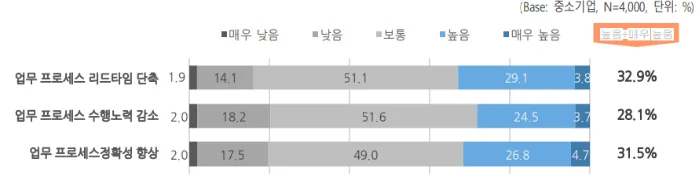
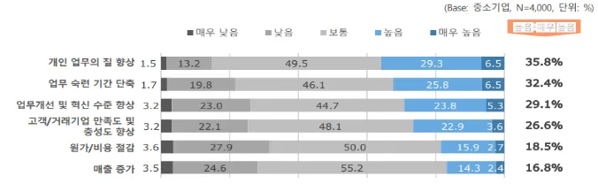
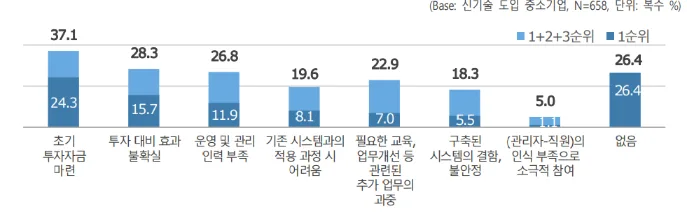
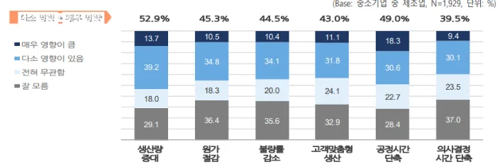
실질적으로, 정부 지원 사업을 통해 스마트공장을 도입한 기업들의 경우에도하기와 같은 문제점들을 가지고 있다.
1. 구축된 시스템의 결함 및 불안정
2. 적용과정 시 필요한 개선 및 유지보수의 어려움
3. 기대한 업무 개선 효과의 부재
4. 기존 업무 시스템과 잘 맞지 않아 적용이 어려움
5. 필요한 교육, 업무개선 등 관련된 추가 업무가 많고 복잡함
그림 8. 스마트공장 도입 후 애로사항 (출처: 중소벤처기업부, 2020)
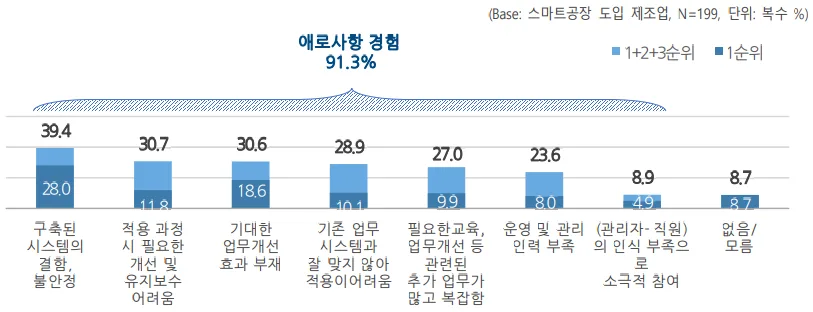
2.6. 한국형 스마트공장 도입 – 시사점
국내 제조 중소기업들은 ICT 기술 도입과 스마트공장 구축에는 매우 긍정적인반응을 가지고 있다는 것을 알 수 있다. 하지만 초기 투자 자금 마련의 어려움을정부 지원으로 어느정도 해결한다 하더라도, 투자 대비 효과의 불확실성과 운영및 관리 인력의 부재는 현실적으로 제조기업이 스마트공장 도입을 하는데 큰제약사항이라 판단되어진다.
또한 도입을 하더라도, 과반수 이상이 업무가 효율적으로 변화하고 삶의 질이나아질 것이라 판단하지 않는 점을 보았을 때, ICT 기술 도입과 현업 실무진들의업무와 괴리감이 존재한다는 것을 유추할 수 있다.
이는 스마트공장을 도입한 기업들의 애로사항으로 나타난다. 시스템의 결함이나유지보수의 어려움뿐 아니라, 기대한 업무 개선 효과의 부재나 기존 업무와 잘맞지 않아 추가 업무가 많아진다는 것은 ICT 기술과 실무의 거리감을 나타낸다. 다음으로는 중소기업들의 애로사항들을 해결할 시사점을 얻기 위해, 국내에서유일하게 등대공장으로 선정된 포스코 사례를 살펴본다.
제 III 장. 포스코 스마트공장 구축 과정
3.1. 포스코 소개
포항종합제철 주식회사(신: 포스코)는 대한민국 정부가 3 억원(75%), 대한중석이 1 억원(25%)를 출자하여 1968 년 4 월 1 일에 설립되어 국영기업으로운영되었다. 포스코는 1988 년 6 월 10 일 코스피 상장이후, 2000 년 10 월 산업은행이 보유하고 있던 지분 36% 매각 이후 완전 민영화가 되었다.
이렇게 시작된 포스코는 2020 년 기준 57 조 7928 억원의 매출액과 2 조 4030 억원의 영업이익을 가지는 대규모 철강사로 성장하였다.
현재 17,583 명의 종업원으로 운영되고 있으며, 국내 조강 기준 시장 점유율은 1 위이고, 세계 철강 생산량 기준으로는 5 위이다. 또한, WSD 철강 경쟁력 평가기준으로는 수년째 1 위를 차지하고 있다.
3 장에서는 포스코의 민영화 이후, 2019 년 등대공장으로 국내에서 유일하게선정되기까지 어떠한 과정으로 발전하였는지 상세히 분석한다.
그림 9. 전세계 등대공장 (출처: 포스코, 2019)
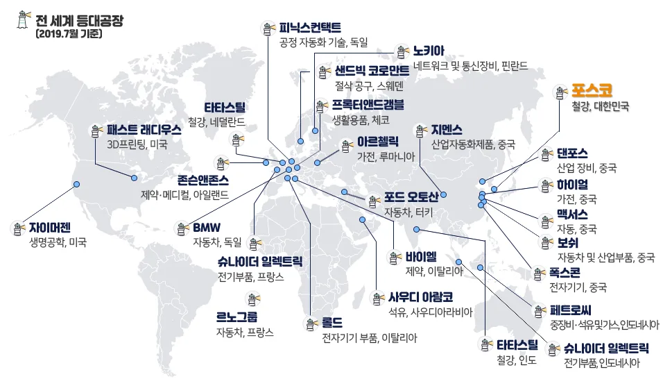
3.2. 포스코의 업무혁신 기반 시스템 도입 Timeline
1999 년 시작된 포스코 업무혁신/경영혁신(PI, Process Innovation)은 기존공기업으로서 포스코가 가진 이미지에서 벗어나, 민영화에 대비하여 본격적으로추진되었다. 생산자 중심적 사고에서 고객 지향적 사고로의 전환 필요성을느끼고, 외부적으로 유럽 및 일본 등의 경쟁업체가 합병 및 대형화를 하면서포스코도 그에 걸맞은 혁신을 필요로 하게 되었다. 또한, 포스코의 최대고객이었던 현대자동차그룹도 자체적으로 용광로를 가동하면서, 시장 안팎으로경쟁이 심화되었다. 이에 따라, 업무혁신과 함께 도입되는 POSPIA 를 통해 활발한혁신을 추진하게 되었다.
PI 1 기를 시작으로, PI 4 기까지 포스코는 2~3 년 단위로 업무혁신을 이루어냈으며, PI 2 기에 도입한 6 시그마 방법론을 시작으로 현재 POSTIM(Posco Total Innovation Model)까지 방법론 측면에서도 지속적인 혁신을 해왔다. 이러한 업무혁신을 기반으로 포스코는 적합한 시스템을 도입해왔으며, 2014 년까지 지속적으로 발전해온 포스피아 3.0 을 기반으로 2015 년도에스마트공장 플랫폼인 ‘포스프레임’을 도입하였다.
2015 년 이후로, 스마트공장을 지속적으로 발전시켜 2019 년에는 등대공장으로선정이 되었고, 현재 2021 년에는 IXOTIVE 라는 차세대 플랫폼을 개발하여스마트공장의 또 다른 도약을 계획하고 있다.
표 5. 전세계 등대공장 (출처: 자체 재구성)
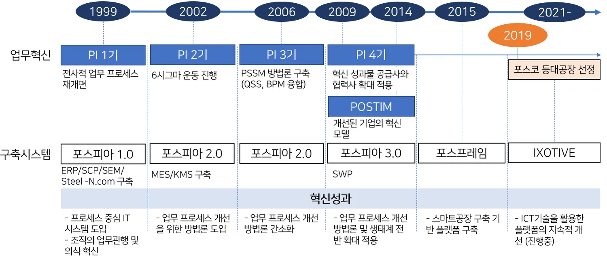
3.3. PI 1 기 (1999-2001)
포스코는 IT 기술의 활용과 민영화라는 경영환경 변화에 포스코를 선순환 구조로변화하기 위한 혁신의 일환으로 PI 1 기를 시작하게 되었다. 당시 최고경영자인유상부 회장의 강력한 추진력과 스폰서쉽을 기반으로, 1998 년 12 월 PI 를 추진할 PI 실을 발족하였다.
포스코의 PI 실을 통해 전사의 프로세스를 백지상태에서 재점검하여, 비효율적이고 복잡한 업무관행과 제도를 완전히 탈바꿈함으로써, 고객 중심의프로세스와 경영시스템을 구축하는데 목적을 두었다.
전사 업무 프로세스를 메가 프로세스 5 개와 하위 세부 프로세스로 상세히분석하는 것부터 시작하였다. 조사한 프로세스와 도입하고자 하는 ERP, SCP, SEM 의 시스템 한계점을 기준으로, To-Be 프로세스를 과업 수준까지 상세설계하였다.
구축한 시스템을 전사에 연계하여 시스템 통합 테스트를 완료하고, 전사직원, 고객, 공급사를 대상으로 교육을 진행하였으며, 새로 구축한 프로세스를 기준으로전사 조직개편을 실행하였다.
표 6. PI 1 기 진행 과정 (출처: 자체 재구성)
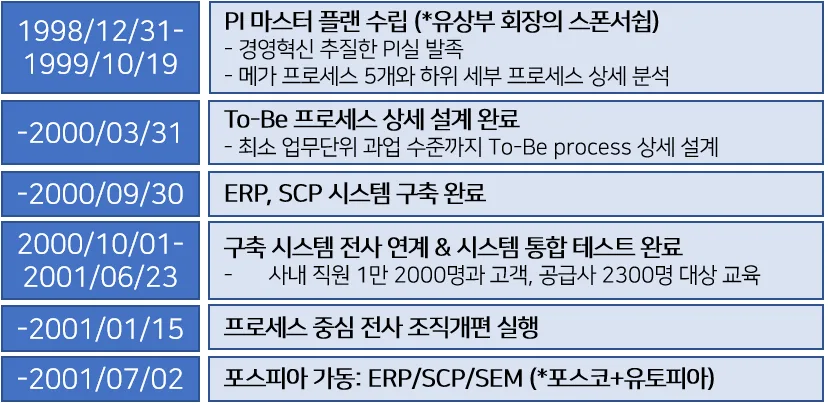
- PI 1 기 혁신 성과
전사적 통합 온라인 경영시스템인 포스피아(POSPIA)가 가동된 이후 포스코의생산성은 비약적으로 상승되었다. 시스템이 가동되자 열연제품의 납품에 걸리는시간은 30 일에서 14 일로 약 보름 이상 단축이 되는 등, 비즈니스의 스피드가획기적으로 빨라졌다.
표 7. PI 1 기 가시적 성과 (출처: 한국경영학회, 2005)
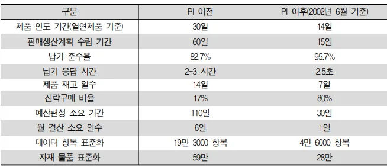
- PI 1 기 문제점
PI 1 기의 문제점으로는 1 기에 행해졌던 혁신 활동들이, 일회성에 그칠 수 있다는우려였다. 또한, 포스피아 시스템과 새로운 프로세스 정착을 위한 보완과 발전을필요로 하였고, 실질적으로 고객사와 공급사들에게 효과가 가시화되지 않았다. 이를 개선하기 위해 포스코는 PI 2 기를 실행하게 된다.
3.4. PI 2 기 (2002-2005)
PI 2 기는 1 기의 연장선상에서 1 기의 문제점을 극복하고, 6 시그마 도입을 통해일하는 방식의 변화를 이끌고, 생산관리시스템(MES)와 고객 관계관리 시스템을구축하는데 목적을 두고 시작되게 되었다.
6 시그마는 기업에서 전략적으로 완벽에 가까운 제품이나 서비스를 개발하는목적의 품질경영 기법이다. 6 시그마 자격증은 6 시그마 자격인증원을 통해부여되는데, 자격증은 크게 3 가지로 나뉜다. Master Black Belt(MBB)는 기업의
비전 전략과 직결되는 전사적 전략 과제의 리더로 BB 자격 취득 후 엄격히선발된 극소수의 핵심 인재이다. Black Belt(BB)는 MBB 과제의 멤버 또는단위사업부 내 핵심 과제의 리더이며, 6 시그마 기법을 충분하게 이해하고 활용할수 있는 핵심 인재이다. 마지막으로 Green Belt (GB)는 BB 과제의 멤버 또는 단위프로세스의 즉각적인 실천 과제의 수행 리더이며, 6 시그마 필수 기법을 이해하고실천할 수 잇는 인재로, 가장 기본이 되는 자격증이다.
표 8. 6 시그마 방법론 (출처: 포스코, 2007)
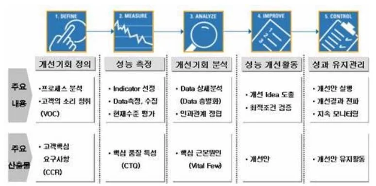
포스코는 직원들 대상으로 6 시그마 교육을 장려하여, 2007 년 당시 전사 직원의 35.6%가 벨트를 보유하였으며, 팀장 이상의 경우에는 80%가 벨트를 보유하였다.
표 9. 벨트인증자 현황 (출처: 포스코, 2007)
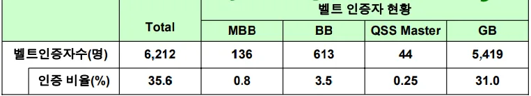
- PI 2 기 혁신 성과
표 10. 1 차~8 차 Wave 별 수행과제 (출처: 포스코, 2007)
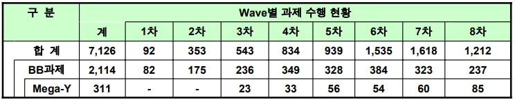
PI 2 기는 벨트인증자들을 통해 1 차에서 8 차까지 총 7126 개의 과제를 수행하게되는데, 이는 7,308 억원의 재무성과를 창출했다 정량적으로 포스코는 평가하였다.
- PI 2 기 문제점
PI2 기의 문제점으로는 무겁고 어려운 6 시그마 방법론은 전원참여가 곤란하다는점이었다. 또한, 비참여자의 혁신에 대한 무관심으로 인해, Mindset 차원의변화관리도 추가적으로 필요하다고 포스코 내부에서는 평가하였다. 포스코는 6 시그마의 도입은 합격하였지만, 6 시그마의 체질화는 미흡하여 조직의 ‘일하는방식’으로 정착되지는 못하였다 평가하였다.
3.5. PI 3 기 (2006-2008)
PI 2 기에서 발견된 문제점을 기반으로, PI 3 기에서는 기존 6 시그마 방법론을확산시키고 정착시켜 ‘일하는 방식’의 혁신에 중점을 두고 있다.
PI 3 기를 통해 포스코는 기존 소수 엘리트, 핵심과제 위주의 전통적 6 시그마방법론에서, 현장의 70%에 해당되는 현장 operator 들의 크고 작은 일상적인개선기법인 QSS(Quick Six Sigma)라는 쉽고 빠르게 진행할 수 있는 6 시그마기법을 탄생시켰다.
PSSM(Posco Six Sigma Model)은 전통적 6 시그마에 BPM(Business Process Management)이라는 프로세스를 끊임없이 최적화하는 방법론과 QSS 를 더한것으로, 문제를 인식해 해결하고, 해결된 방법으로 일상 업무를 수행하고, 보다나은 방법으로 지속 개선하는 선순환의 혁신 및 학습 활동이다.
그림 11. PSSM 구성도 (출처: 포스코, 2007)
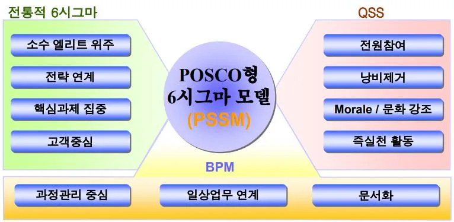
포스코는 또한 업무의 시작과 일상의 업무를 On, Off-line 토론을 통해 개선하는활발한 학습동아리 장을 조성하여, PSSM 을 정착시키는 문화를 유도하였다.
- PI 3 기 혁신 성과
포스코는 PSSM 활동을 통해, 타사의 모방수준을 뛰어넘는 포스코 고유의 일하는방식으로 체질화시켜, 3 기가 마무리된 2008 년에는 매출액 30 조 6420 억원을달성하였고, 영업이익도 2007 년보다 51.8% 늘어난 6 조 5,400 억원, 순이익은 20.9%늘어난 4 조 4470 억원을 달성하였다. PI 3 기를 추진하는 기간이 철강산업의호황기이기는 하였지만, 포스코 측은 생산성이 크게 높아졌고, 학습동아리를 통해활성화된 원가절감 노력이 크게 기여한 것으로 분석하였다.
3.6. PI 4 기 (2009-) & POSTIM (2014-)
포스코 PI 4 기의 목표는 PI 1 기 ~3 기까지의 혁신작업들을 고도화하고 포스코뿐아니라 참여생태계 전반에 걸친 포스코 계열사부터 협력사, 고객사까지 혁신성과와 노하우를 확대 적용하는 상생 전략이다.
표 11. 포스코의 PI 기간 중 실적 변화 (출처: 포스코, 2010)
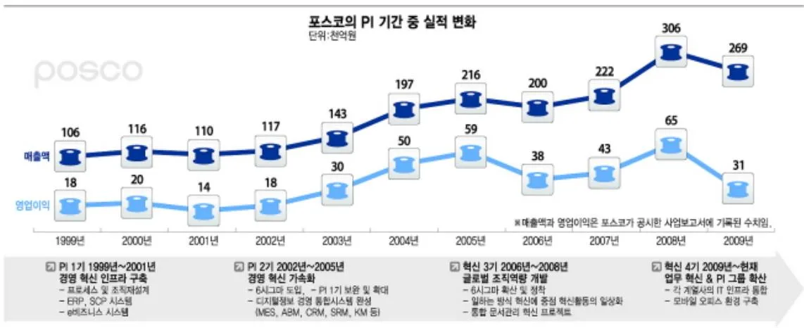
- POSTIM (POSCO Total Innovation Model)
POSTIM 은 포스코의 고유 혁신 모델로, 그동안의 혁신활동에서 포스코가 겪어온문제점을 추가로 개선한 혁신모델이다. 이 혁신모델은 ‘일과 혁신의 일체화로수익창출에 매진’, ‘자발적인 직원들의 참여와 성과에 상응하는 보상’, ‘창의적
활동과 본업에 몰입하는 업무환경 조성’, ‘기술력과 문제해결력을 갖춘 인재양성과우대’를 기본 원칙으로 하고 있다.
POSTIM 의 활동은 PSS+(Posco Six Sigma Plus), QSS+(Quality Stability Safety Plus), SWP(Smart Work Place) 3 가지로 구성되어 있다. PSS+는 IP 프로젝트를 통해수익성 향상을 목표로 하여, 목표달성을 위한 프로젝트를 발굴하고, 성과창출에집중하는 업무방식이다. QSS+는 품질, 안정성, 안정 향상에 초점을 둔 활동이며, SWP 는 화합과 긍정의 조직문화를 바탕으로 고부가가치 업무를 수행하고창의적인 아이디어를 창출하는 등 본업에 집중할 수 록 지원하는 활동이다. 포스코는 POSTIM 를 통해, 대다수의 혁신방법론을 한층 편리하게 적용하고, 더좋은 방법론이 개발되어도 원하는 부문만 POSTIM 체계 속에 포함시킬 수있도록, POSTIM 을 통해 포스코 고유의 혁신모델로 발전시키고자 해당 방법론을개발하였다.
표 12. POSTIM 구성요소 3 가지 (출처: 포스코, 2015)
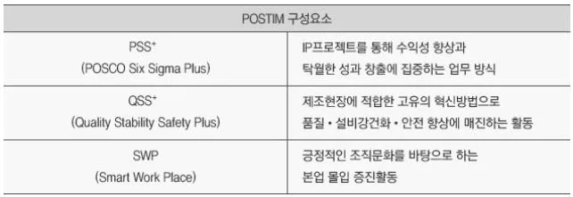
- 혁신 성과
PSS+를 통해 IP 프로젝트 수행에 집중한 결과, 프로젝트 수행 건수는 지난해 대비 136% 수준으로, 실현이익이 157% 수준으로 증가하였다.
QSS+측면에서는 지속적인 현장 혁신 활동을 바탕으로, 2013 년 대비품질부적합률이 22%, 설비장애율이 32%, 휴업도수율이 39% 떨어지는 등획기적인 성과를 이끌어 냈다.
또한 SWP 활동은 불필요한 문서를 300 만건 감축함으로써, 문서 검색시간과보관비용을 동시에 절감하였다. 이를 통해 본부별 업무 감축 (Work Diet)를 통해개선안을 1,946 건 발굴하는 성과도 도출해냈다.
3.7. 스마트공장 플랫폼 – 포스프레임 (2015-2020)
2016 년 6 월 개설된, 포스프레임(PosFrame)은 철강제품 생산과정에서 발생되는대량의 데이터를 수집, 정렬, 저장하고 이를 고급 데이터 분석 기술, 인공지능 등스마트 기술을 적용하여 품질 예측 및 설비고장 예지모델을 만드는 등의 포스코고유의 스마트공장 플랫폼이다.
포스코는 2015 년 07 월 광양 후판공장을 시범공장으로 선정하여 스마트공장개발에 착수하였다. 이어 스마트공장을 사물인터넷 기반의 조업상황을 예측 및진단, 최적 제어가 이뤄지는 지능형 제조공장으로 개념을 정립하고, 같은 해 10 월부터는 광양 후판 공장과 포항 2 열연공장으로 프로젝트를 확장시켰다. 이를통해, 포스코는 스마트 시범가동을 통해, 가능성을 확인하고, 이를 점차 확대시켜전사 및 그룹사 전체의 스마타이제이션 기반 조성을 위한 스마트 솔루션카운슬(SSC: Smart Solution Council)을 발족시켜, 스마트공장 구축 사업을확장하였다.
그림 12. 포스코 스마트플랫폼 – PosFrame (출처: 포스코, 2018)
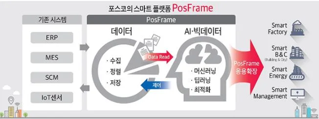
- 스마트공장 도입 혁신 성과
2016-2019 년 진행된 321 건의 스마트과제를 통해, 포스코는 2500 억원의 원가
절감을 이루었으나, 외주비 2,700 억원을 상향하였다. 또한, 포스코는 스마트공장
구축 노하우를 협력사, 공급사, 고객사 등과 공유하여, 제조업 스마트공장확산으로 산업 생태계 전반을 강건화 하는데 노력하였다.
그림 13. 포스코 스마트플랫폼 – PosFrame (출처: 포스코, 2018)
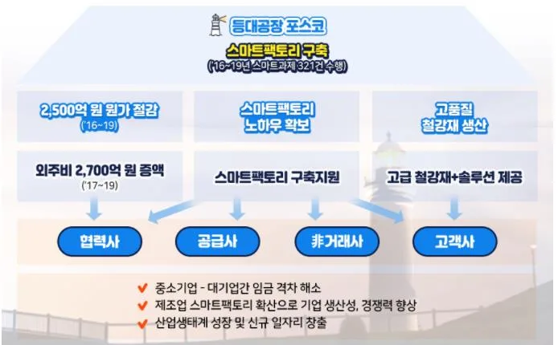
3.8. 차세대 스마트공장 플랫폼: IXOTIVE (2021-)
IXOTIVE 는 스마트공장 인공지능, 자동화 등 3 대 분야의 솔루션을 통합하는브랜드로 CES 2021(Consumer, Electronics Show)에 처음 소개되었다. IXOTIVE 는 IT(Information Technology)와 OT(Operation Technology)를 융합하여고객에게 새로운 가치를 제공한다는 의미로, 기존 포스프레임에 추가로 설비제어장치인 포스마스터와 음성인식을 통해 설비를 제어하는 보리스를 구성하여스마트공장 솔루션의 포트폴리오를 더욱 다양화한 플랫폼이다.
IXOTIVE 의 혁신성과는 현재 진행중으로, 평가를 할 수는 없지만, 지속적으로개선하고 발전시키는 포스코의 모습을 살펴볼 수 있다.
그림 14. 차세대 스마트공장 플랫폼 – IXOTIVE (출처: 포스코)
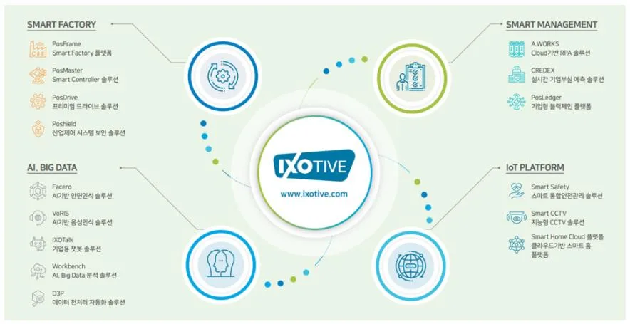
3.9. 포스코의 세계적 경쟁력
철강 전문 분석기관인 WSD(World, Steel Dynamics)는 철강사 경쟁력 순위를 2002 년부터 발표를 시작하였다. WSD 는 세계철강사를 평가하는 23 개 항목을기준으로 가중치를 부여하여 점수를 선정하는데, 등대공장으로 선정되기 바로 그전년도인 2018 년도 당시에는, 원가절감 노력, 혁신기술 적용, 사업다각화, 근로자숙련도 등 8 개 항목에서 만점을 받았다. 또한, 가격 경쟁력, 수익성, 규모, 생산능력 증대에서도 높은 점수를 획득하였다.
포스코는 2002 년부터 2004 년까지 연속 3 년 1 등을 기록한 이후, 2005 년부터 2009 년까지 2 위에 머물렀으나, 2010 년부터 2020 년 현재까지 11 년간 1 위의자리를 굳건히 유지하고 있다.
업계 세계 최고의 경쟁력을 가지고 있다 평가받는 현재의 포스코가 있기에는, 업무혁신을 통한 점진적 개선의 결과물이라 판단할 수 있다. 지속적 업무 개선과문화로의 정착까지 포스코는 끈임없이 자체적으로 방법론을 개선하고 있다.
표 13. WSD 23 가지 평가항목 (출처: WSD)
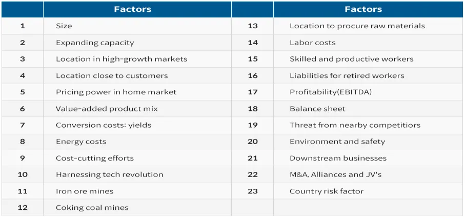
표 14. WSD 평가 철강사 경쟁력 순위 2002-2020 (출처: WSD 자료 재구성)
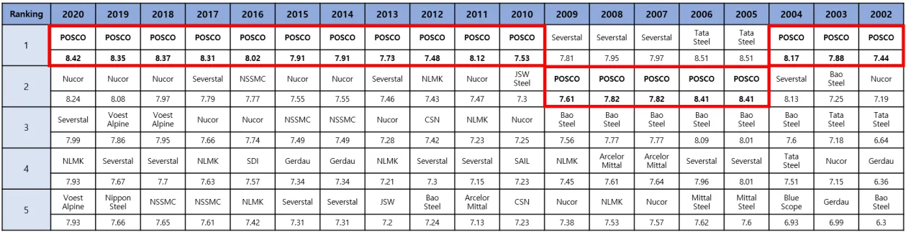
제 IV 장. 포스코 혁신 사례의 이론적 분석
4.1. 포스코의 업무혁신과 동반된 시스템 도입 과정 이론적 분석
3 장에서는 포스코의 혁신 내용과 그 성과를 분석하였다. 4 장에서는 포스코가현재의 제조업의 미래를 이끌어가는 등대공장으로 선정되기까지의 과정을 이론적분석을 통해 재해석하고자 한다.
표 15. 포스코의 혁신전략과 이론적 분석 (출처: 자체 재구성)
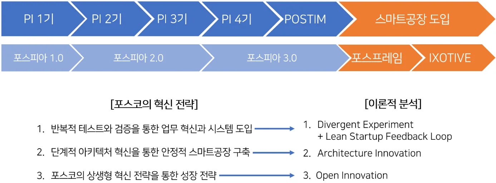
4.2. 반복적 테스트와 검증을 통한 업무 혁신과 시스템 도입 (Divergent
Experiment + Lean Startup Feedback Loop) Rogers, L. David 의 ‘The Digital Transformation Playbook: Rethink Your Business for the Digital Age’에서는 신제품이나 서비스를 개발하기 위한 두가지 방법론을제시한다. 저자가 정의하는 수렴 실험 방식(Convergent Experimental Method)은여러가지 옵션을 점차적으로 제거하면서 특정 방안에 수렴하는 방법이고, 발산실험 방식(Divergent Experimental Method)는 옵션을 탐색하고, 여러가지 질문에대해 답을 찾아가며 반복하는 작업이다.
포스코의 혁신 방식은 발산 실험 방식과 Eric Ries 의 Lean Startup Feedback Loop 을 융합한 형태로, 문제를 정의하고 제한된 시간내에 적절한 인력을배치하여, 지속적으로 개선을 하는 방식을 택하고 있다.
PI 1 기에서 고객 중심 프로세스로 재설계를 위해, 전사 업무를 재구성하고, 이를위해 전사 조직 개편을 진행하여, 포스코의 시스템인 포스피아 1.0 과 적합한체재를 구축하였다.
PI 2 기에서는 PI1 기의 혁신을 이어 나가기 위해 지속적인 업무 혁신을 위한 6 시그마 방법론을 도입하고, 전사 프로젝트를 과제화 하여, 포스피아 2.0 에적합한 체제를 재구축하였다.
PI 3 기에서는 PI 2 기에서 문제가 되었던 어려운 6 시그마 방법론은 재구축하여, 현장에도 적용할 수 있도록, 포스코 방식으로 재구성한 PSSM 을 도출하였다. PI 4 기 이후로는 참여 생태계 전반 기업들에게 자사의 혁신 방법론을 전파하고, POSTIM 을 통해, 기존 PSSM 방법론을 추가 개선하였다.
이러한 발산 실험 방식과 feedback loop 을 통해 포스코는 전사 업무 프로세스의지속적 개선과 이를 기반으로 시스템 도입을 진행하면서, 글로벌 철강 경쟁력 1 위를 지속적으로 유지하는 성과를 달성하였다 판단된다.
표 16. 발산 실험 방식과 피드백 루프를 통한 점진적 혁신 (출처: 자체 재구성)
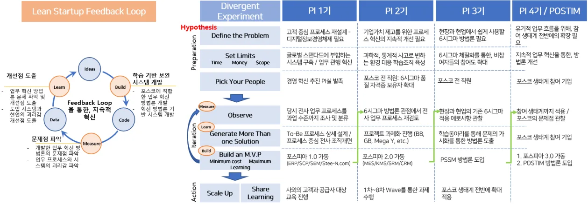
4.3. 단계적 아키텍처 혁신을 통한 안정적 스마트공장 구축 (Architecture
Innovation)
PI 1 기-4 기와 POSTIM 을 통해 이룬 성과를 기반으로, 스마트제조를 위한포스코의 스마트공장 구축 사업은 점진적 전환을 통해 아키텍처 혁신 (Architecture Innovation)을 이루어 냈다.
처음부터 포스코의 모든 시설을 스마트화 빅뱅 전략이 아닌, 광양 후판공장에서작게 시작하였다. Modular 형태로 안정적인 스마트공장에 대한 평가를 시작으로, 포항 2 열연공장으로 대상 프로젝트를 확대하면서 상호 공장 간의 연결로야기되는 복잡성에 대한 평가를 진행하였다. 이를 통해, 포스코는 Modular 아키텍처에서 Integral 아키텍처 전환을 위한 중간 점검 단계를 거쳤다 판단된다. 앞서 진행된 광양후판공장과 포항 2 열연공장을 통해 수집된 데이터와 테스트결과를 기반으로, 복잡한 포스코 전체 공장을 유기적으로 연결해주는포스프레임이라는 스마트공장 플랫폼을 개설하였다. 이러한 일련의 과정을 통해, 포스코는 충격을 최소화하며 전체를 유기적으로 연결하는 integral 형태의스마트공장을 성공적으로 도입할 수 있었다.
그 이후, 포스코는 그룹 사업 전반에 스마타이제이션을 추진하여, 포스코와 그계열사뿐 아니라, 협력회사를 포함한 외부 관련사, 그리고 그 고객까지 참여생태계의 모든 벨류체인을 최적화하였다. 이를 통해 포스코는 외부 접합점을 modular 형태로 전환하여 외부와의 연결성을 강화시켜, Integral Inside Modular Outside (IIMO) 형태로 성공적인 전환을 하였다 판단된다.
그 이후로는 애플과 페이스북의 데이터센터를 시공한 DPR 건설과 스마트데이터센터와 스마트공장을 건설하여, 클라우드 기반 디지털 트윈 스마트 공장을구축하면서 내부 Integral 아키텍처를 더욱 강화하였다.
이는 포스코 전사 생산 라인의 스마트화를 급격히 진행하는 파괴적 혁신 (Disruptive Innovation) 전략이 아닌, 테스트와 검증을 통한 점진적(Incremental) 아키텍처 혁신(Architecture Innovation)이라 판단된다.
표 17. 포스코의 단계적 스마트공장 도입 과정 (출처: 자체 재구성)
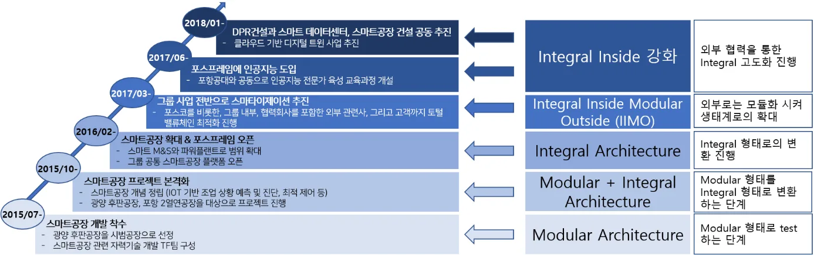
4.4. 포스코의 상생형 혁신 전략을 통한 성장 전략 (Open Innovation)
오픈 이노베이션(Open Innovation)은 2003 년 미국 UC 버클리대학의 Henry Chesbrough 교수가 처음으로 제시한, 기업의 내부 자원을 외부에 공개해 타기업이나 스타트업 등과 손잡고 혁신에 필요한 기술과 아이디어를 밖에서끌어오는 혁신 방식이다.
오픈 이노베이션의 유형은 크게 두가지로 나뉘는데, 내향형(Outside-in) 오픈이노베이션과 외향형(Inside-out) 오픈 이노베이션으로 구분이 된다. 내향형 오픈이노베이션은 기업이 연구, 개발, 상업화의 과정에서 외부의 기업이나 연구소, 대학 등으로부터 지식이나 아이디어 등을 얻는 것을 의미하고, 외향형 오픈이노베이션은 기업이 자신이 가지고 있는 지식이나 아이디어를 외부에 보내서다른 비즈니스 모델을 통해 상업화하는 것을 의미한다.
포스코는 내향형 오픈 이노베이션 방식을 택하고 있는데 산학연 협력을 통해공동 연구를 진행하고, 중소 벤처기업부와 한국벤처캐피탈협회 등과 업무협약체결을 통해 유망기업을 발굴한다. 또한, 포스코의 벤처밸리는 포스코의 산학연인프라를 기반으로 사내외 벤처기업의 창업과 보육을 지원하고, 벤처펀드는벤처밸리 입주기업뿐만이 아닌 국내외 유망 벤처기업들을 투자대상으로 하여새로운 성장동력을 찾고자 하는 목적이다.
산학연 협력, 업무협약 채결, 벤처 투자 활동을 기반으로 포스코는 “포스코 벤처플랫폼”을 조성하여 포스코의 신성장 동력인 신수종 사업을 발굴해가고 있다.
그림 15. 포스코의 내향형 오픈 이노베이션 (출처: 포스코 자료 재구성)
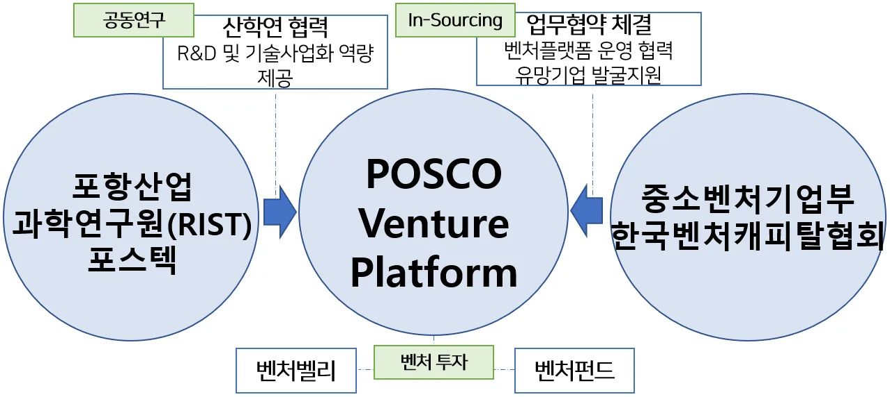
제 V 장. 한국형 스마트공장과 포스코 사례 비교 4 장에서 포스코 사례를 이론적으로 분석하였고, 5 장에서는 한국형 스마트공장도입 현황과 포스코의 혁신사례를 비교 분석한다.
5.1. 시스템 도입 과정 비교
ICT 미적용 단계에서 기초단계로 넘어가는 한국형 스마트공장은 Master Plan 수립에 있어 Data 의 수집 방식, 클라우드 기반 시스템(MES/POP) 도입, 그리고 ICT 기술을 어떻게 활용할지에 대해 계획을 수립한다. 그 외에는 단위 장비 설비단위의 간이 자동화와 디지털화를 진행하고, 클라우드 컴퓨팅 기반으로 시스템을이전하는 계획을 추진한다.
반면 포스코는 시스템 도입에 앞서, 발산 실험 방식의 지속적 개선을 통해시스템의 한계점을 파악하고 현업의 업무 프로세스 재구축하면서, 피드백 루프를통한 시스템과 업무 프로세스의 정합성을 높여갔다.
한국형 스마트공장: 자동화, 디지털화 포스코: 업무혁신과 동반된 시스템초점의 시스템 도입 도입
표 18. 시스템 도입 과정 비교 (출처: 자체구성)
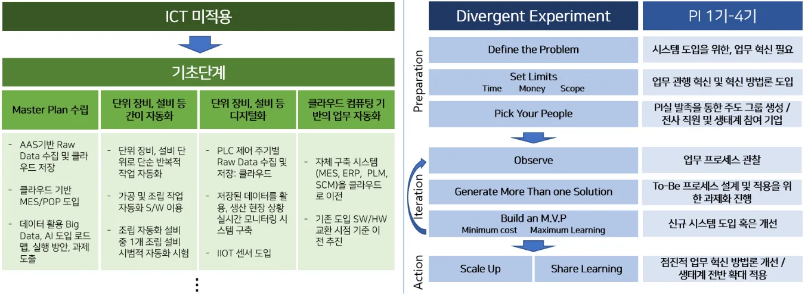
이를 통해 파악할 수 있는 차이점은 한국형 스마트공장은 업무 프로세스를진행하는 시스템 도입 자체에만 초점을 두고, 현업의 업무 프로세스는 그에걸맞게 개선하는 구조이다. 반면, 포스코는 실무진들이 지속적 피드백 루프를통해 직접 업무 프로세스를 개선하고 개선과 시스템 도입을 병행하여 업무의정합성을 높이는 방식으로, 두 가지 유형에는 큰 차이점이 존재한다.
5.2. 스마트공장 구축 아키텍처 비교
스마트제조혁신추진단이 정의하는 한국형 스마트공장의 단계와 포스코가 구축한스마트공장 단계는 동일하다 판단할 수 있다. 두 사례 모두, 기초 수준에서는 Modular 형태로의 test 과정을 거치고, 중간 1 단계에서는 Integral 전환을 위한중간 시험 단계라 볼 수 있다. 중간 2 단계에서는 비로소 Integral 형태로전환하여 전사적으로 스마트공장의 고효율화를 진행한다. 고도화 단계에서는 참여생태계 전반 가치사슬로의 확산을 위해 Integral Inside Modular Outside (IIMO) 형태로 전환하고, 그 이후에는 기존 Integral 시스템의 고도화를 진행한다. 하지만 한국형 스마트공장과 포스코 스마트공장의 도입과정에서의 차이점은업무혁신 진행의 유무이다. 포스코는 업무 혁신을 통한 아키텍처 전환을진행하였지만, 한국형 스마트공장은 업무 혁신이 배제된, 아키텍처 전환관점에서의 스마트공장 구축 단계를 형성하고 있다.
앞서 2 장에서 언급된 바와 같이, 업무혁신을 취하는 중소기업은 12.5%에불과하다. 이를 행하는 중소기업은 아키텍처 전환에 따른 업무혁신이라 유추할 수있으며, 이는 스마트 공장 보급현황에 반영되어 있다. 기초단계에 머물러 있는기업이 77.8%이고 중간 1 단계에 머무른 기업이 20.5%로, 총 98.3%의 기업이 Integral 화를 진행하지 못하는 것은 업무혁신의 부재이거나 업무혁신을 하더라도포스코와 같은 체계적 혁신의 부재로 나타나는 현상이라 판단할 수 있다. 한국형 스마트공장: 5 가지 수준 발전 포스코: 스마트 공장 전개 과정
표 19. 스마트공장 구축 단계 비교 (출처: 자체 재구성)
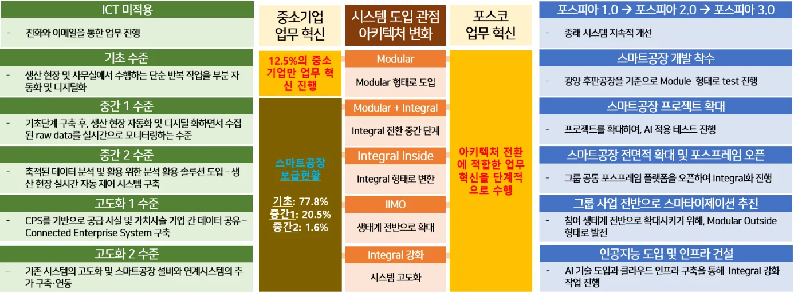
5.3. 시스템 도입의 기술 필터링 수단 비교
한국형 스마트공장은 현재 KAMP 플랫폼을 통해, 벤처기업 육성과 제조기업에의스마트공장 솔루션을 제공하고자 한다. KAMP 는 벤처기업들에게 제조데이터분석도구와 AI 데이터셋을 제공하고, 관련 교육콘텐츠를 제공하고 있다. 또한, 클라우드 인프라를 제공하여, 벤처기업들과 제조기업들에게 데이터 저장 및인프라에 소요되는 비용을 감축시킬 수 있도록 보조하는 역할을 하고 있다. 반면, 포스코는 내향형 오픈 이노베이션을 통해 신기술을 발굴하여 자사에 적용을하는데, 포스코는 자체 IT 팀인, Posco ICT 조직을 통해, 신기술을 필터링하고신기술을 자사 플랫폼 혹은 사업 영역에 적용하고 있다 유추할 수 있다. 해당 사례의 비교로 도출할 수 있는 시사점은, 벤처기업들이 KAMP 를 통해공급하는 S/W 가 얼마나 안정적으로 개발되어 현업에서 돌아가는지 이를테스트하고 검증할 중간 기관이 KAMP 에는 없다는 점이다. 포스코의 경우, 포스코 ICT 팀이 현업에 적용하기 전, 검증과 개선 작업을 거칠 것이고, 적용후에도 유지보수를 통해 오작동 등과 같은 에러를 지속적으로 개선해 나갈것이다. 하지만 중소기업은 자체 IT 팀을 운영하여 포스코와 같은 작업을거치기에는 비용적 부담이 크게 느껴질 것이라 생각된다.
한국형 스마트공장: KAMP 플랫폼을 포스코: 내향형 오픈 이노베이션을통한 벤처기업 육성과 제조 기업에의 통한 신기술 발굴과 Posco ICT 의스마트공장 솔루션 제공 필터링을 통한 신기술의 적용
그림 16. 시스템 도입 기술 필터링 수단 비교 (출처: 자체 재구성)
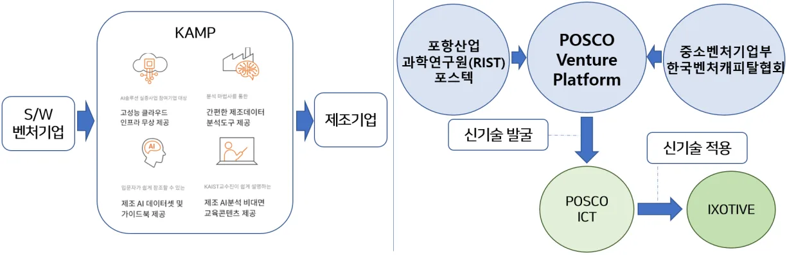
제 VI 장. 결론 및 시사점본 연구는 한국형 스마트공장 도입 현황과 포스코의 스마트공장 구축과정을 비교분석하여, 한국형 스마트공장의 문제점을 크게 3 가지로 도출하였다.
첫째, 한국형 스마트공장은 반복적 피드백 루프(Iterative feedback loop)을 통한시스템과 업무의 지속적 개선이 이루어 지지 않고 있다.
둘째, 한국형 스마트공장은 아키텍처 전환에만 초점을 두고 있고, 포스코는업무혁신을 동반한 아키텍처 전환을 진행하였다.
셋째, 현재 한국형 스마트공장은 중간 관리 기능이 부재하여 도입 시스템 및신기술을 필터링할 수 없다.
한국형 스마트공장의 현상태는 제조 강국들의 트렌드 답습하기 식의 인기 혁신활동을 모방한 스마트공장 구축 사업으로 비춰지며, Infra 구축 중심 성공률완성도는 그리 높지 않다. 그에 대한 결과로, 현재 한국형 스마트공장 도입 중소기업들의 77.8%가 스마트공장 기초 수준에 머물러 있음을 알 수 있다. 물론 연속 공정 산업과 이산 산업의 특성 차이로 인한 스마트공장 형태는 다를수 있고, 중소기업이 포스코와 같은 대기업의 장점을 모두 가질 수도 없다. 하지만 신규 시스템 도입을 통해 업무를 효율화 하고 기업의 가치와 이윤을 증대시키고자 하는 기업들의 목적은 모두 동일하며, 이는 산업의 특성이나 기업의규모와는 별개로 구분되어 분석되어야 할 문제이다.
포스코의 사례가 스마트공장 도입의 대표적인 예시라 볼 수는 없겠지만, 업무혁신과 동반된 시스템 도입과 6 시그마 방법론의 지속적 개선을 통해시스템과 현업의 정합성을 높이고, 혁신 문화를 사내에 정착시킨 것은 현재 세계경쟁력 1 위의 포스코를 만들어낸 것으로 판단할 수 있다.
한국형 스마트공장은 현재 도입 방향의 한계점을 명확히 파악하여, 중소기업들의한계점을 보조하는 방안과 업무혁신을 통해 중소기업 실무진들의 현업과시스템의 정합성을 높이는 방향으로의 개선이 필요하다 판단된다.
제 VII 장. 한국형 스마트공장 혁신 전략 방향 제언제 1 장부터 5 장까지 조사하고 분석한 내용을 기반으로 도출한 시사점을 통해, 한국형 스마트공장 혁신 전략 방향에 다음과 같은 제언하고자 한다.
한국형 스마트공장 도입 중소기업들의 애로사항 5 가지를 기반으로, 포스코는이러한 문제를 어떻게 해결했는지에 대해 분석하였고, 이를 한국형 중소기업스마트공장 혁신 전략 방향을 도출하였다.
첫번째 애로사항인 구축된 시스템 결함 및 불안정은, 벤처기업들의 시스템 성숙도문제로, 포스코는 자체 ICT 팀을 운영하여 시스템 개선 및 유지보수를 진행하고있다. 이를 통해 도출할 수 있는 방안은, KAMP 에 벤처기업 S/W 테스트 및 검증부서를 신설하여 이를 개선하는 것이다.
두번째로는 중소기업들의 IT 부서 부재로, 유지보수가 어려운 문제이다. 포스코는거대한 자금을 바탕으로 산학연 연계를 통해 인재 양성을 할 수 있었지만, 중소기업에게는 KAMP 를 통해 시스템 유지보수를 지원할 수 있을 것이다. 나머지 문제에 대해서는 5 장의 시스템 도입과정에서 비교한 바와 같이, 업무혁신이 배제된 시스템의 도입으로 생기는 문제점이다. 이는 스마트제조혁신단차원에서 6 시그마 업무혁신 방법론 교육과 함께 중소기업 내부에서 스스로시스템 도입 전, 업무혁신을 이루어 내도록 유도하여야 할 것이다.
표 20. 한국형 중소기업 스마트공장 혁신 전략 방향 제언 (출처: 자체 재구성)
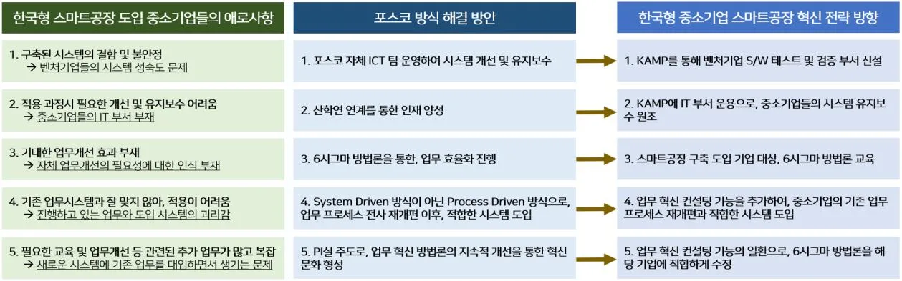
Reference
- 정대진, 박성준, 한용재, 민관 공동 제조업 혁신 3.0 전략, 산업통상자원부 보도참고
자료, 2014
- 김우순, 강호정, 중소기업 스마트 제조혁신 전략, 중소벤처기업부 보도자료, 2018
- 김우순, 예우영, AI데이터 기반 제조혁신 고도화 전략, 중소벤처기업부 보도자료,
- 스마트제조혁신추진단, 스마트공장 수준단계별 구축 Case 예시, 스마트제조혁신추진
단 참고자료, 2021
- 김주선, 융합연구리뷰, 한국과학기술원 융합연구정책센터, 2020
- 중소벤처기업부, 중소기업기술정보진흥원, 2019 중소기업 정보화 수준 결과보고서,
중소벤처기업부, 2020
- 홍성기, 경영혁신의 성공적 추진 방안, 한국표준협회/더컨설팅, 2009
- 조병철, 포스코 혁신활동 추진현황, 포스코 경영혁신실, 2007
- 포스코, 포스코 50년사(1948-2018), 포스코, 2018
- 김군역, POSCO, 6시그마팀, Ie 메거진,2005
- 허남석, 김희, 기업의 살아있는 혁신활동, 포스코 광양제철소, 한국혁신학회지, 2006
- 안상목, 업무프로세스혁신(PI : Process Innovation)을 통한 포스코건설의 경영혁신
사례, 포스코건설, 2006
- 조동성, 김기찬, 박지윤, e-SC를 통한 e-Business 성공사례: 포스코 사례를 중심으
로, 한국경영정보학회 춘계학술대회, 2002
- IT를 활용한 경영혁신 사례: 세계적인 철강기업 Posco, 정보기술과 경영혁신, 2017
- 허문구, 프로세스 혁신 및 ERP의 실행과 조직변화, 한국경영학회, 2005
- 정은미, 한국형 스마트 제조전략 수립의 중요성과 기본방향, 산업연구원, 2020
- 장지상, 한국 제조업 경쟁력, 코로나 19 경제위기의 버팀목, 산업연구원, 2021
- 오영석, 박성근, 제조업내 산업 및 기업의 부실징후 변화와 시사점, 산업연구원,
- 장지상, 미래전략산업 브리프, 산업연구원, 2021
- 신현수, 최근의 수출부진과 주요 업종의 경쟁력 추이, 산업연구원, 2019
- 김일호, “스마트공장”, 중소제조업 디지털 전환의 핵심, 산업연구원, 2021
Innovation Hub